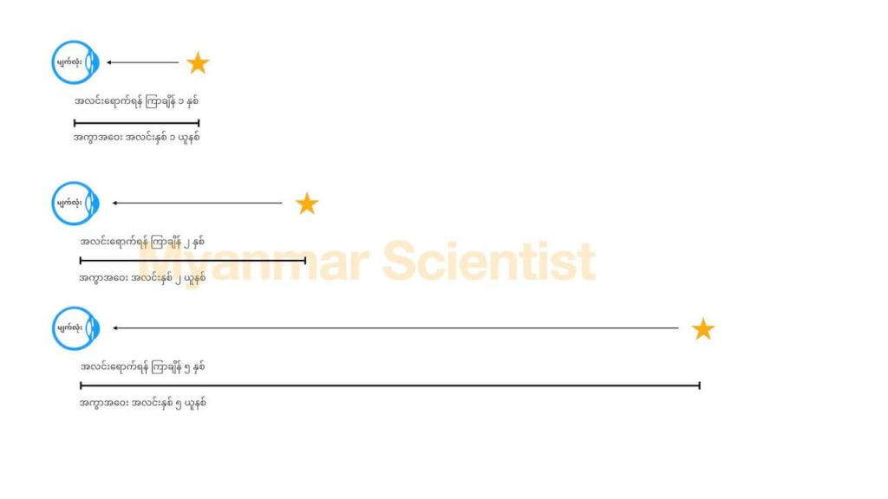
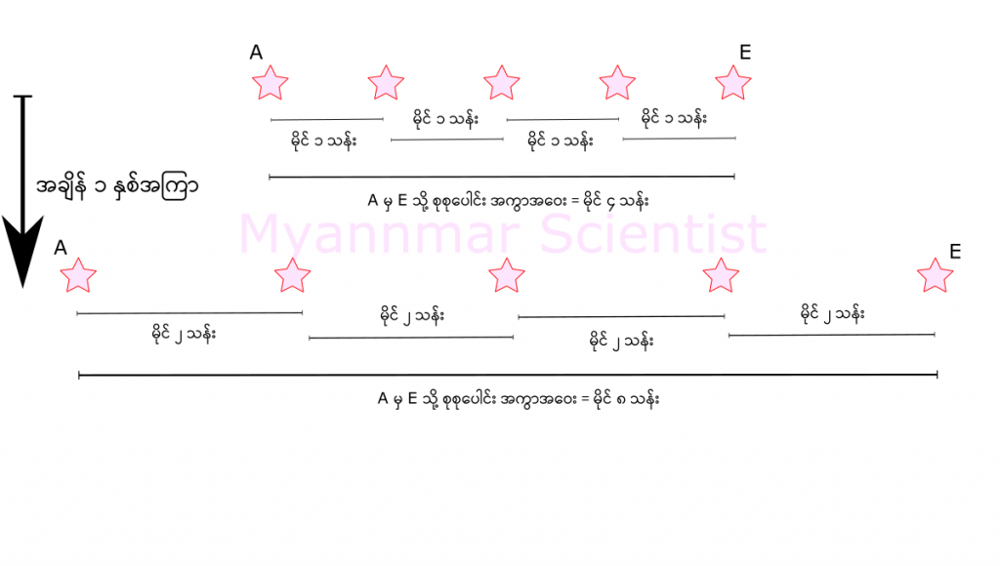

တနည်းအားဖြင့် ပြောရရင် အဲ့သည် အလင်းနှစ် ၁၃ ဘီလီယံ အကွာက အလင်းဟာ ကမ္ဘာမြေကို ရောက်ဖို့ နှစ် သန်း ၁၃,၀၀၀ လောက် ကြာပါတယ်။
ဒီတော့ အခု James Webb ကနေ မြင်ရတဲ့ စကြာဝဠာ အစွန်အဖျားက ဂလက်ဆီတွေဟာ လွန်ခဲ့တဲ့ နှစ် သန်း ၁၃,၀၀၀ ခန့်က ထွက်လာခဲ့တဲ့ အလင်းမှုန် (photon) လေးတွေ အခုမှ ကမ္ဘာကို ရောက်လာလို့ မြင်ကြရတာ ဖြစ်ပါတယ်။
ဒီနေရာမှာ စကြာဝဠာ အစွန်အဖျား ဆိုတာက ကမ္ဘာကနေ မြင်ရတဲ့ observable universe အကွာအဝေး အစွန်ဆုံးနားမှာ ရှိတာကို ဆိုလိုတာပါ။ တနည်းအားဖြင့် ကျွန်တော်တို့ အဝေးဆုံး မြင်နိုင်တဲ့ အကွာအဝေး အတွင်းက စကြာဝဠာရဲ့ အစိတ်အပိုင်းကို ဆိုလိုတာ ဖြစ်ပါတယ်။ (ပုံ ၁)
အလင်းနှစ် ဆိုတာက အချိန်ကာလကို တိုင်းတာတဲ့ ယူနစ် မဟုတ်ပဲ အကွာအဝေးကို တိုင်းတဲ့ ယူနစ် ဖြစ်ပါတယ်။
ဒါပေမယ့် တဖက်မှာလဲ အလင်းနှစ် တစ်နှစ် အကွာအဝေးကို အလင်းရောက်ဖို့ အချိန် တစ်နှစ် ယူရတာမို့ အလင်းနှစ် တစ်နှစ် အကွာက မြင်ရတဲ့ အရာဝတ္ထုဟာလဲ လွန်ခဲ့တဲ့ အတိတ် တစ်နှစ်က အရာဝတ္ထုကို မြင်နေရတာပဲ ဖြစ်ပါတယ်။ ဒီလိုပဲ အလင်းနှစ် ၁၀ နှစ်အကွာက အလင်းဟာ လွန်ခဲ့တဲ့ ၁၀ နှစ်က အလင်းဖြစ်ပြီး အလင်းနှစ် တစ်သန်း အကွာက အလင်းဟာလဲ လွန်ခဲ့တဲ့ နှစ် တစ်သန်းက အလင်း ဖြစ်ပါတယ်။ (ပုံ ၂)

ဆိုလိုတာက နှစ် ၁၃ ဘီလီယံ အတွင်းမှာ ၁၃ ဘီလီယံ အကွာအဝေးကနေ ၄၈ ဘီလီယံ အကွာအဝေးကို ရွေ့သွားတာ ဖြစ်ပါတယ်။ ဆိုတော့ တွက်ကြည့်လိုက်ရင် နှစ် သန်း ၁၃,၀၀၀ အတွင်းမှာ အလင်းနှစ် သန်း ၃၅,၀၀၀ တောင်မှ ရွေ့သွားတာပေါ့။ (ပုံ ၃)
ဒါဆို သူတို့ ပြေးတဲ့ နှုန်းက အလင်းပြေးတဲ့ နှုန်းထက်တောင် ၃ ဆ ပိုများနေတာပေါ့။
ဒါပေမယ့် အိုင်းစတိုင်းရဲ့ နှိုင်းရ သီအိုရီ (Special Theory of Relativity) အရဆို စကြာဝဠာထဲမှာ အလင်းထက် မြန်အောင် သွားနိုင်တဲ့ အရာ မရှိဘူးလို့ ပြောထားတယ်လေ။ အခုကျတော့ ကမ္ဘာကနေ ကြည့်ရင် အစွန်အဖျားမှာ ရှိတဲ့ ဂလက်ဆီ တွေက အလင်းရဲ့ သွားနှုန်းထက် ၃ ဆ လောက် မြန်တဲ့နှုန်းနဲ့ ပြေးနေပါလား။
ဒါဆို အိုင်းစတိုင်း ကပဲ မှားတာလား။ ကျွန်တော်တို့ တွက်တာပဲ မှားနေလို့လား။ ဒါမှ မဟုတ် James Webb တယ်လီစကုပ် ကြီးကပဲ တိုင်းတာ မှားနေလား။
တကယ်တော့ အိုင်းစတိုင်း မမှားပါဘူး။ အိုင်းစတိုင်း မမှားသလို James Webb က တိုင်းတာလဲ မမှားပါဘူး။
ဒီလိုပဲ ဒီ ဂလက်ဆီ တွေဟာ အခုဆို အလင်းနှစ် ၄၈ ဘီလီယံ အကွာမှာ ရောက်နေပြီ ပြောတဲ့ သိပ္ပံ ပညာရှင် တွေလဲ မမှားပါဘူး။ ဒီ ဂလက်ဆီ တွေက ကျွန်တော်တို့ ကမ္ဘာကနေ ဝေးရာကို အလင်းထက် ၃ ဆ မြန်တဲ့ အလျင်နဲ့ ပြေးနေကြတယ် ဆိုတာလဲ အမှန်ပါပဲ။
ဒါပေမယ့် စကြာဝဠာ ထဲမှာ ဘယ်အရာမှ အလင်းထက် မြန်အောင် မသွားနိုင်ဘူး လို့ ဆိုတာကလဲ အမှန်ပါပဲ။
ဟုတ်ကဲ့ ပါ၊ အရမ်းကို ရှုပ်သွားပါပြီလား။ တကယ်တော့ မရှုပ်ပါဘူး။ တကယ်က ရှင်းရှင်းလေး ဖြစ်ရမှာပါ။ ရှုပ်သွားတာက အစွန်အဖျားက ဂလက်ဆီ တွေဟာ ကျွန်တော်တို့နဲ့ ဝေးရာကို အလင်းအလျင်ထက် ၃ ဆ လောက် မြန်တဲ့နှုန်းနဲ့ ပြေးနေကြတယ် လို့ ပြောတဲ့ စကားက မတိကျလို့ ဖြစ်သွားရတာပါ။
ဒီနေရာမှာ တကယ်က ဒီ ဂလက်ဆီ ကြီးတွေက မော်တော်ကားတွေ လေယာဉ်ပျံတွေ သွားသလို အရှိန်အဟုန်နဲ့ ကျွန်တော်တို့နဲ့ ဝေးရာကို ပြေးနေကြတာ မဟုတ်ပါဘူး။ တကယ် ဖြစ်နေတာက အဲ့သည် ဂလက်ဆီ တွေနဲ့ ကျွန်တော်တို့ ကြားက ဘာမှ မရှိတဲ့ အာကာသ ဟင်းလင်းပြင် (Space) က ကျယ်သွား၊ ကားသွား တာပါ။
ဘာနဲ့ တူလဲ ဆိုတော့ ပူဖေါင်းပေါ်မှာ ရေးထားတဲ့ အမှတ် နှစ်ခုဟာ ပူပေါင်း မှုတ်လိုက်တဲ့ အခါမှာ တစ်ခုနဲ့ တစ်ခု ဝေးသွား သလိုမျိုး ဝေးသွားတာ ဖြစ်ပါတယ်။ ဒီ ပူပေါင်း ပေါ်က အမှတ် နှစ်ခုကို ကြည့်ရင် ဒိ အမှတ် တွေက ရွေ့သွားတာ မဟုတ်ပါဘူး။ ဒီ့အစား ဒီ အမှတ်တွေ ဆွဲထားတဲ့ ရာဘာပြား ကြီးက ကားထွက် လာတာ ဖြစ်ပါတယ်။
ဟင်းလင်းပြင် ပြန့်ကား ထွက်တာကလဲ ဒီသဘောပါပဲ။ ဂလက်ဆီ တွေ ကြားထဲက ဟင်းလင်းပြင်က ပြန့်ကား ထွက်လာတော့ အဲ့သည် ဟင်းလင်ပြင်ထဲ ရှိနေတဲ့ အရာဝတ္ထုတွေက တစ်ခုနဲ့ တစ်ခု ဝေးသွားရတာ ဖြစ်ပါတယ်။
ဟင်းလင်းပြင် ပြန့်တာကလဲပူပေါင်း ပြန့် သလိုပါပဲ။ ပူပေါင်း ဖေါင်းလာတာ ကြည့်ရင် တစ်နေရာထဲ ကွက်ဖေါင်းလာတာ မဟုတ်ပဲ နေရာ အားလုံးက နည်းနည်းစီ နဲ့ ဆန့်ထွက်လာတာ တွေ့ရမှာ ဖြစ်ပါတယ်။ ဟင်းလင်းပြင် ကလဲဒီလိုပဲ နေရာတိုင်းမှာ နည်းနည်းစီ ဆန့်ထွက်လာပါတယ်။
ဒီလို နေရာတိုင်း ဆန့်ထွက်လာတာကို နည်းနည်းစီ ပေါင်းလိုက်တော့ အရမ်း ဝေးတဲ့ နေရာ နှစ်ခု တစ်ခုနဲ့ တစ်ခု ခြားသွားတဲ့ နှုန်းက အရမ်း မြန်သွားတာ ဖြစ်ပါတယ်။ (ပုံ ၄)

ဒါဆို နောက်တနှစ် ဒီအချိန် ပြန်တိုင်းကြည့် လို့ရှိရင် ကပ်နေတဲ့ ကြယ်တစ်စင်းနဲ့ တစ်စင်းကြားက အကွာအဝေးဟာ မိုင် ၂ သန်း ဖြစ်လာမှာ ဖြစ်ပါတယ်။ ဒါက ဒီကြယ်တွေ ရွှေ့သွားမတာ ကြောင့် မဟုတ်ပါဘူး။ ကြယ် တွေကြားက အာကာသ ဟင်းလင်းပြင် (Space) ကိုယ်နှိုက်က ကျယ်ထွက် လာတာပါ။
ဒါဆို ကြယ် A နဲ့ E ကြားက အကွာအဝေး ကရောဗျာ။ ဒီ ကြယ် နှစ်စင်း ကြားကတော့ အခုဆို မိုင် ၈ သန်းဝေးသွားပြီ ဖြစ်ပါတယ်။ တနည်းအားဖြင့် A နဲ့ E ကြားက အကွာအဝေးဟာ တစ်နှစ်ကို မိုင် ၄ သန်း ဝေးသွားပါတယ်။
ဒါဆို ကြယ် A အနားက ဂြိုဟ်ပေါ်မှာ ကျွန်တော်တို့ ရှိနေတယ် ဆိုပါဆို့ဗျာ။ ကျွန်တော်တို့ အတွက်ကတော့ A ပေါ်က ကြည့်ရင် မနှစ်က မိုင် ၄ သန်း ကွာခဲ့ပြီး ဒီနှစ် မိုင် ၈ သန်း ကွာ သွားတဲ့ အတွက် E ဟာ ကျွန်တော်တို့ ဆီကနေ တစ်နှစ်ကို မိုင် ၄ သန်း အမြန် နှုန်းနဲ့ ပြေးထွက် နေတယ် လို့ မြင်မှာ ဖြစ်ပါတယ်။
တကယ်တော့ ကြယ် A က မိုင် ၄ သန်း အမြန်နှုန်းနဲ့ ပြေးတာ မဟုတ်ပဲ ကြားထဲက အာကာသ ဟင်းလင်းပြင် ကသာ ကျယ်ထွက်လာတယ် ဆိုတာကို မြင်နိုင်မှာ ဖြစ်ပါတယ်။
ဒါဆို အိုင်းစတိုင်း ပြောခဲ့တဲ့ ဘယ်အရာမှ အလင်းထက် မြန်အောင် မသွားနိုင်ဘူး ဆိုတာကရော။
အိုင်းစတိုင်းရဲ့ နှိုင်းရ သီအိုရီ မှာ စကြာဝဠာရဲ့ အမြန်နှုန်း ကန့်သတ်ချက်ဟာ အလင်းရဲ့ အလျင် ဖြစ်တယ်လို့ ဆိုခဲ့ပါတယ်။ ဒါပေမယ့် အိုင်းစတိုင်းရဲ့ သီအိုရီက စကြာဝဠာ ရဲ့ ဟင်းလင်းပြင် (Space) ထဲမှာ ရှိနေတဲ့ အရာဝတ္ထုတွေ သွားတဲ့ နှုန်းကိုပဲ ပြောခဲ့တာပါ။ ဟင်းလင်းပြင် ပြန့်တာနဲ့ ပါတ်သက်လို့ ဘာမှ မပြောခဲ့ပါဘူး။
လက်ရှိ နှိုင်းရ သီအိုရီကို လေ့လာတဲ့ ပညာရှင် တွေကတော့ အလင်းရဲ့ အလျင် ကန့်သတ်ချက်ဟာ ဟင်းလင်းပြင် ပြန့်ကားတဲ့ နှုန်းအပေါ်မှာ သက်ရောက်မှု မရှိဘူးလို့ ယုံကြည် ကြပါတယ်။
သိပ္ပံ ပညာရှင် အများစု ကတော့ ဟင်းလင်းပြင် ပြန့်တဲ့ အလျင်ကို တိုင်းလို့ မရဘူးလို့ ဆိုပါတယ်။ ဘာလို့လဲဆိုတော့ အပေါ်မှာ ရှင်းပြ ခဲ့သလိုပဲ ပူပေါင်း ပြန့်သလို ပြန့်ထွက်တာမို့ နီးတဲ့ အမှတ်တွေက နဲနဲပဲ ဝေးသွားပေမယ့် ဝေးတဲ့ နေရာက အမှတ်တွေကတော့ မြန်မြန် ဝေးကွာ သွားကြတာ မို့ပါ။
နိဂုံးချုပ် ရရင် ဝေးကွာတဲ့ အရပ်တွေက ဂလက်ဆီတွေ ပြေးထွက် နေတဲ့ အလျင်က အလင်းလျင်ထက် မြန်တဲ့ အလျင်နဲ့ ပြေးထွက် နေတယ်လို့ ထင်ရပေမယ့် တကယ်ကတော့ ကြားက ဟင်းလင်းပြင် ပြန့်ကား ထွက်နေတာမို့ ဒီလို အလင်းထက် မြန်တယ်လို့ ထင်ရတာ ဖြစ်တယ် ဆိုတာ တင်ပြလိုက်ရပါတယ်။
— မောင်သူရ (မြန်မာ့သိပ္ပံ) —
Reference: Is space expanding faster than the speed of light? | Ask Astronomer